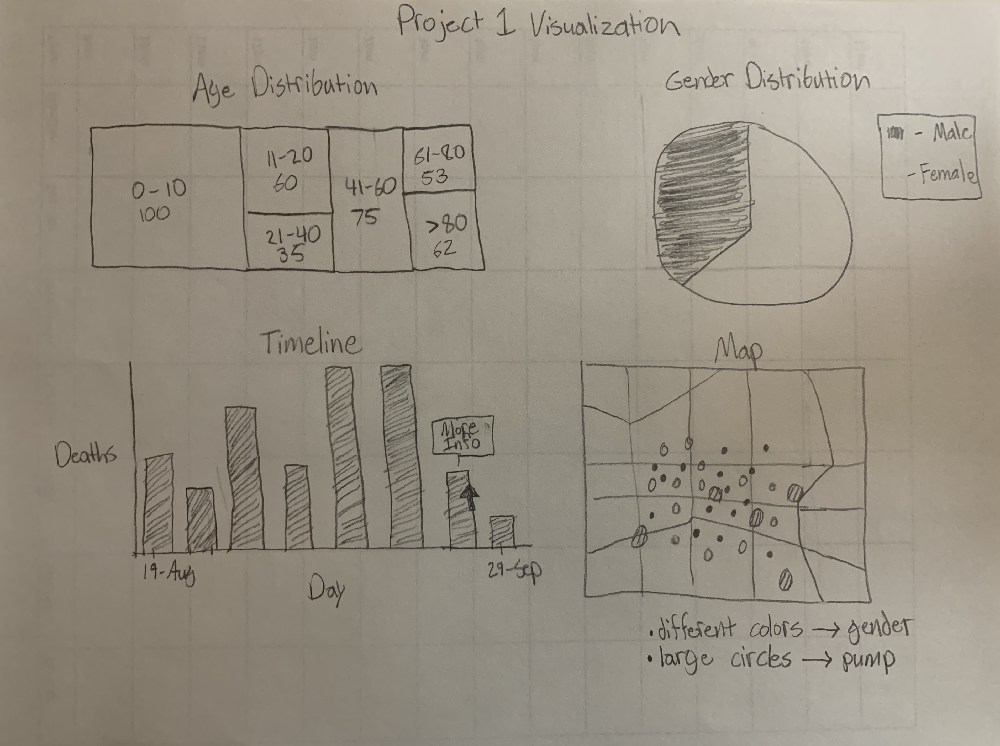

I began the design process with a rough sketch of the visualization as seen below. This sketch includes the map of London in the top right corner with the timeline graph to the left of it. I initially put these plots on the top of the page because I considered them to be the most essential part of the visualization. Below them I sketched a tree map depicting the deaths of different age groups as well as a pie chart depicting male versus female deaths. I chose these types of plots in my initial sketch because I wanted some variety. I thought it would be benficial to have many different types of visualizations. As I started to write the code for the visualization, I had some different ideas and revised some of my ideas from the sketch. Overall, the visualization went through many different changes as I developed it and saw the results of my code.
Now we will discuss the specific design choices and what went into each decision. First, the charts depicting age and gender splits are at the top of the page. I decided on their position because these are the more basic exploratory analysis charts. I wanted viewers to see the more simple plots before the more complicated map and timeline. After creating the tree map and pie chart similar to the sketch, I decided that these were not the best way to display the information. Ultiimately I determined that bar charts were the best visualization to use. Although this abandons the idea of variety, I think that it was more important to get the information across clearly to the viewer. Furthermore, I also chose to not have a traditional y-axis for these graphs and to place the y-value on top of the bars. I did this because the y-axis made it very hard to differentiate the values in the "Death by Gender" graph, as the values are very close to each other. Therefore, I found it best to just display the values outright. Then, it made sense to also not have a y-axis on the "Death by Age" graph because I wanted the two graphs to be visually similar. Finally, for the "Death by Gender" graph, I chose to make the male bar red and the female bar blue. This makes it possible to differentiate between male and female deaths in the map below as we use the same colors.
On the next row of the page, we see the timeline graph and map, along with two sliders to filter the range of days displayed on the map. The timeline graph is a bar chart that will show a tool tip and become red when hovering on it. I chose to have no y-axis on this graph as well for a few reasons. First is so it could be consistent with the bar graphs above. Second, because viewers would be hovering over the bars to change the map, I figured a good way to display the y-value and other information would be through a tool tip. This tip indicates the day number since the first death, number of deaths that day, and the cumulative deaths up to that point. During the design process, I went through many ideas of how the timeline would interact with the map, including showing all deaths from that day and showing all cumulative deaths. But ultimately I decided on enlarging the points from that day when you hover over the timeline bar. I felt that this gives us the best visaulization in order to see where all the deaths of that day occurred compared to the rest. Moving on to the map itself, each death is represented by a red or blue point, and hovering over a point will display a tool tip that gives the age range of that person. The points were designed this way in order to display position of death, gender based on color, and age. Furthermore, the pumps are displayed on the map as black rectangles. I chose this shape so that they will be easily differentiable from the many circles on the map. There is also a large green circle on the map to indicate where the workhouse is located, a grey circle representing the brewery, and several street names. This was done to give some context to the map and possibly lead to more discoveries with the data. The viewer is also able to zoom in on the map. This was done so that viewers can better see the more crowded parts where there are many deaths. Finally, we have two range sliders to update the days being viewed on the map. This was created so that viewers can look at specific days or a range of days. This is helpful in seeing the progression of deaths and can possibly reveal new insights in the data.
While creating this visualization I learned many facts and had a lot of questions answered. First, I learned from the "Death by Ages" graph that the two highest death totals came from the 0-10 age range and the greater than 80 age range. This was very interesting especially because the greater than 80 age range presumably makes up a very small percentage of the overall population. Next, a question I wondered going in was what gender was most impacted by the epidemic. From the "Deaths by Gender" visualization, I learned that the number of deaths was nearly equal for men versus women. Finally, from the map you can see that their are not very many deaths near the workhouse even though it is near the infected pump. I learned that this is because the workhouse had its own well and did not rely on the pump.